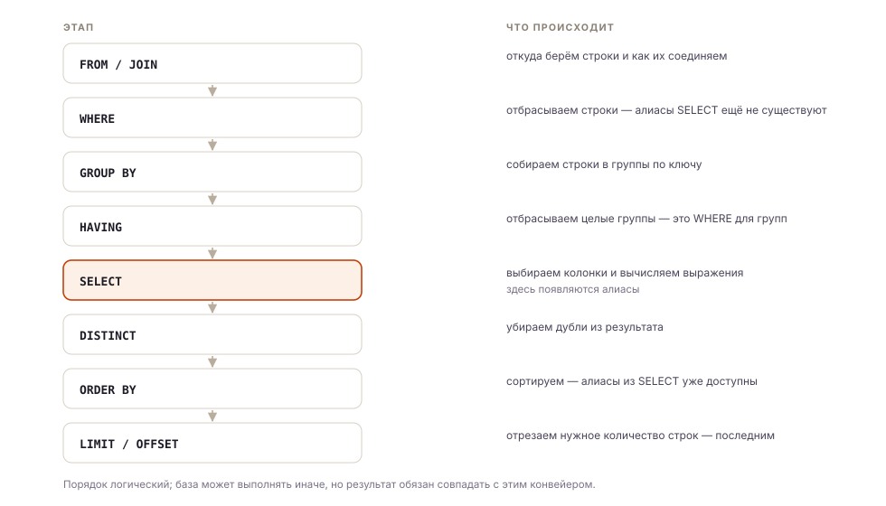

Порядок выполнения: как база читает запрос Пишем сверху вниз, а выполняется — не так
SQL выглядит линейным: SELECT, FROM, WHERE, GROUP BY. Но база выполняет части в другом порядке, и именно поэтому одни ошибки кажутся загадочными, а другие — очевидными. Один конвейер объясняет и те, и другие.
Словарь главы — если забыли термины
- логический порядок
- FROM → WHERE → GROUP BY → HAVING → SELECT → ORDER BY → LIMIT.
- алиас
- Имя колонки из SELECT; появляется поздно, поэтому не виден в WHERE.
- HAVING
- Фильтр групп после GROUP BY; WHERE фильтрует строки до.
- DISTINCT
- Убрать дубли уже выбранного результата; выполняется после SELECT.
- LIMIT
- Отрезать строки в конце; без ORDER BY порядок не гарантирован.
01Зачем это backend-разработчику
- Ошибки, которые объясняет порядок: «почему алиас не виден в WHERE», «почему HAVING не работает без GROUP BY», «почему LIMIT без ORDER BY даёт случайные строки».
- Понимание, а не заучивание: вместо «так нельзя» появляется «SELECT ещё не выполнялся».
- Отладка медленных запросов: план выполнения (глава 24) читается по тем же этапам.
- Собеседование: «в каком порядке выполняется SQL-запрос» — классический вопрос, на котором видно понимание.
Все запросы этой части выполняются на учебной базе learning_shop:
users, products, orders. Скрипт создания — learning_shop.sql,
запуск — bash tools/setup_db.sh.
02Ассоциация-якорь: сборочный конвейер
Запрос — это конвейер. Сначала на ленту попадают детали (FROM), потом брак отбрасывается (WHERE), детали собираются в узлы (GROUP BY), узлы проверяются (HAVING), затем выбирается то, что нужно показать (SELECT), убираются дубли (DISTINCT), всё сортируется (ORDER BY) и только в конце отрезается нужное количество (LIMIT).
SELECT стоит в середине конвейера. Поэтому алиасы, придуманные в SELECT, не существуют на этапе WHERE — их ещё не создали.
03Ассоциативный ряд: восемь звеньев
- FROMисточник строк
- JOINсоединение таблиц
- WHEREфильтр строк
- GROUP BYсборка групп
- HAVINGфильтр групп
- SELECTвыбор колонок и алиасы
- ORDER BYсортировка
- LIMITотрезка результата
04Схема: конвейер запроса

05Как это устроено на самом деле
Порядок этапов объясняет три вещи сразу.
| Вопрос | Ответ | Почему |
|---|---|---|
| Почему алиас не виден в WHERE? | SELECT ещё не выполнен | WHERE идёт раньше SELECT |
| Чем HAVING отличается от WHERE? | WHERE фильтрует строки, HAVING — группы | WHERE до GROUP BY, HAVING после |
| Почему LIMIT без ORDER BY нестабилен? | порядок строк не гарантирован | LIMIT отрезает уже готовый результат |
Логический и физический порядок
Описанный конвейер — логический: он определяет смысл запроса. Физически база может читать таблицы в другом порядке, использовать индексы и даже переписывать запрос. Но результат всегда должен соответствовать логическому порядку — иначе SQL был бы непредсказуем.
DISTINCT стоит после SELECT
SELECT DISTINCT city убирает дубли уже из выбранных значений — то есть
из результата SELECT. Поэтому DISTINCT и агрегаты решают разные задачи:
первый убирает повторяющиеся строки результата, второй сворачивает группы.
06Лаборатория: запустить и увидеть
Все примеры — на базе learning_shop. Вывод настоящий: он получен через
psql на PostgreSQL 14.
Шаг 1. Алиас в WHERE — ошибка
SELECT price * 1.2 AS price_with_tax FROM products WHERE price_with_tax > 1000;
Алиас создаётся на этапе SELECT, а WHERE выполняется раньше. Приходится повторять выражение или считать в подзапросе.
Шаг 2. Алиас в ORDER BY — работает
SELECT name, price * 1.2 AS price_with_tax FROM products ORDER BY price_with_tax DESC LIMIT 3;
ORDER BY выполняется после SELECT, поэтому алиас уже существует. Это не «SQL непоследователен», а прямое следствие конвейера.
Шаг 3. WHERE и HAVING: разные этапы
SELECT category, COUNT(*) AS cnt FROM products WHERE price > 500 GROUP BY category HAVING COUNT(*) >= 2;
Сначала WHERE выбросил дешёвые товары, потом GROUP BY собрал группы, потом HAVING выбросил группы с одним товаром. Порядок важен: WHERE не знает про группы, HAVING — знает.
Шаг 4. Полный конвейер
SELECT category, COUNT(*) AS cnt, MAX(price) AS max_price FROM products WHERE price > 400 GROUP BY category HAVING COUNT(*) > 1 ORDER BY cnt DESC LIMIT 2;
Шесть этапов в одном запросе. Если что-то не сходится, идите по конвейеру и проверяйте, на каком этапе строка исчезла.
Шаг 5. LIMIT без ORDER BY
SELECT name, price FROM products LIMIT 2;
Сейчас вывод выглядит упорядоченным, но гарантии нет: LIMIT отрезает строки в том порядке,
в котором их отдал план. Для стабильного результата нужен ORDER BY.
07Мост: тот же конвейер в pandas
В pandas цепочка методов читается как тот же конвейер — и это не совпадение.
SELECT category, COUNT(*) AS cnt FROM products WHERE price > 500 GROUP BY category HAVING COUNT(*) > 1 ORDER BY cnt DESC LIMIT 2;
(df[df["price"] > 500] # WHERE
.groupby("category") # GROUP BY
.agg(cnt=("product_id", "size")) # COUNT(*) — считаем строки
.query("cnt > 1") # HAVING
.sort_values("cnt", ascending=False) # ORDER BY
.head(2)) # LIMIT
Порядок методов повторяет порядок этапов SQL. Если в pandas «не тот результат», ищите ошибку в порядке цепочки — ровно как в SQL-запросе.
08Шесть ошибок, на которых спотыкаются
WHERE total > 100 после SELECT SUM(x) AS total — ошибка: алиас ещё не создан.
Фильтр по колонкам строк в HAVING работает, но фильтрация происходит позже и часто медленнее.
Результат «случайный» и меняется между запусками.
Если строки размножились из-за JOIN, DISTINCT скроет симптом, но не причину.
ORDER BY 2 работает, но при изменении SELECT сортировка тихо сломается.
WHERE COUNT(*) > 1 невозможно: агрегаты появляются после GROUP BY.
09Вопросы с собеседования
В каком порядке логически выполняется SQL-запрос?
FROM → JOIN → WHERE → GROUP BY → HAVING → SELECT → DISTINCT → ORDER BY → LIMIT. Запись в коде — другая, но смысл определяется этим порядком.
Почему алиас из SELECT не виден в WHERE?
WHERE выполняется раньше SELECT, поэтому вычисленное значение и его имя ещё не существуют.
Чем WHERE отличается от HAVING?
WHERE фильтрует строки до группировки, HAVING — группы после. Условия на агрегаты — только в HAVING.
Почему LIMIT без ORDER BY нестабилен?
Без сортировки порядок строк не определён; LIMIT отрезает то, что успел отдать план.
Где выполняется DISTINCT?
После SELECT: он убирает дубли из уже выбранных значений результата.
Может ли база выполнять запрос иначе?
Да, физически — с индексами, другим порядком соединений и переписыванием. Но результат обязан соответствовать логическому порядку.
Почему ORDER BY видит алиас, а WHERE нет?
Потому что ORDER BY идёт после SELECT, а WHERE — до него.
Как отладить запрос, который возвращает не то?
Идти по конвейеру: проверить FROM/JOIN (число строк), WHERE (сколько осталось), GROUP BY (какие группы), HAVING (какие исчезли), SELECT (что именно выбрано).
10Три задачи: сначала своя попытка
01 Исправьте запрос
Запрос должен вернуть товары с ценой с налогом больше 2000, но падает. Исправьте.
SELECT name, price * 1.2 AS price_with_tax FROM products WHERE price_with_tax > 2000;
Показать решение
SELECT name, price * 1.2 AS price_with_tax FROM products WHERE price * 1.2 > 2000;
Что важно. Либо повторить выражение, либо обернуть в подзапрос:
SELECT * FROM (SELECT ..., price*1.2 AS tax FROM products) t WHERE tax > 2000.
02 Топ категорий
Выведите две категории с наибольшим числом товаров дороже 400, но только если товаров больше одного.
Показать решение
SELECT category, COUNT(*) AS cnt FROM products WHERE price > 400 GROUP BY category HAVING COUNT(*) > 1 ORDER BY cnt DESC LIMIT 2;
03 Объясните поведение
Почему SELECT DISTINCT category FROM products ORDER BY price LIMIT 1 может упасть?
Показать ответ
При DISTINCT сортировать можно только по выражениям, которые входят в результат (или по агрегатам).
price не выбран, а после дедупликации к какой строке относить цену — неясно.
PostgreSQL выдаст ошибку: для SELECT DISTINCT выражения ORDER BY должны присутствовать в списке SELECT.